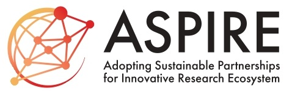

International Research Projects
Principal Investigator, JST ASPIRE for Top Scientists, December 2024 – March 2030.
Japan Science and Technology Agency (JST), Adopting Sustainable Partnerships for Innovative Research Ecosystem (ASPIRE) for Top Scientists,
"Building Mathematical Foundation for Cyber Physical Dynamical Systems: Interdisciplinary Research and Human Resource Development on Control with Prediction and Learning."
- Press Release on December 2, 2024, can be found here.

International Activities
- Elected Member, IEEE CSS Board of Governors, 2022–2024
- IPC Co-Chair, The 22nd IFAC World Congress 2023
- General Chair, The 10th IFAC Symposium on Robust Control Design ROCOND 2022
- Publication Co-Chair, European Control Conference 2020
- Chair, IEEE Control Systems Society Technical Committee on Robust and Complex Systems, 2019–2023
- List of International Symposia/Workshops Organized/Co-Organized by Ebihara
Keynote/Tutorial Talks
- Tutorial Talk entitled "L1-Induced Norm Analysis of Positive Systems and Its Application to Stabilization of Large Scale Interconnected Positive Systems" at The 57th IEEE Conference on Decision and Control, Miami Beach, FL, USA, December 17–19, 2018.
- Keynote Talk entitled "Control Synthesis Under Positivity Constraint: Beautiful Results and Challenging Issues" at The 6th International Conference on Positive Systems (POSTA2018), Hangzhou, China, August 25–27, 2018.
Recent Special Events
-
The 23rd IFAC World Congress, August 23–28, 2026, Busan, Republic of Korea.
In the IFAC WC 2026, D. Peaucelle and Y. Ebihara have made an Open Invited Track (OIT) Proposal entitled "LMIs and S-variable Approach in Control." The details of the OIT proposal can be found here.
Research Interests
Reliability Verification of AI Algorithms and Neural Networks by Mathematical Systems Theory
- Exact Model Reduction of Feedforward Neural Networks.
- Lipschitz Constant Computation of Feedforward Neural Networks.
- Stability Analysis of Recurrent Neural Networks.
Analysis and Synthesis of Dynamical Systems Using Conic Programming
- O'Shea-Zames-Falb Multipliers for Idempotent Nonlinearities.
- Analysis and Synthesis of Nonlinear Dynamical Systems Using Copositive Programming.
Past Topics
- H2 State-Feedback Synthesis Under Positivity Constraint on the Closed-Loop Systems.
- Construction of Externally Positive Systems for LTI System Analysis.
- LMI-based Performance Limitations Analysis of H-infinity Control Systems.
- Analysis and Synthesis of Positive Systems with Time Delays.
- Stability and Persistence Analysis of Large-Scale Interconnected Positive Systems.
- L1-induced Norm Analysis and Synthesis of Positive Systems.
- Periodic Controller Synthesis for Discrete-Time Systems.
- Robust SDP/LMI.
- Linear System Analysis Using the Generalized S-procedure.
- Stability Analysis of 2-D Systems.
- Model Reduction for Finite-Dimensional Linear Time-Invariant Systems.
- Dilated-LMI-based Robust Control System Analysis and Synthesis.
- Multiobjective Control.
- Sequential Tuning Methods of LQI Servo Systems.